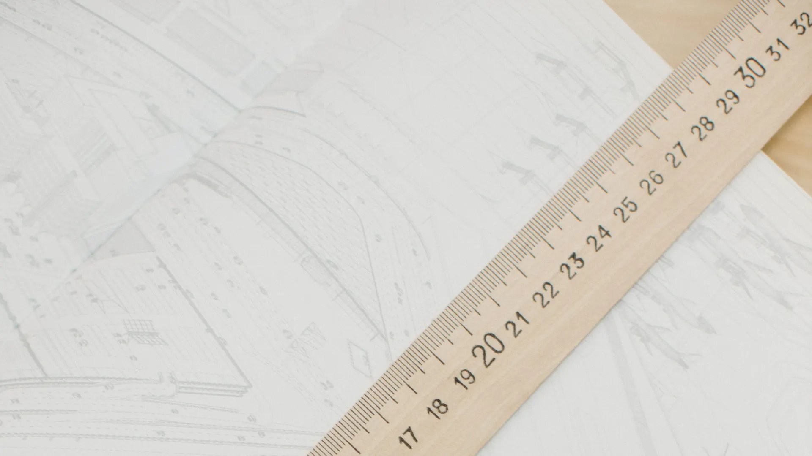
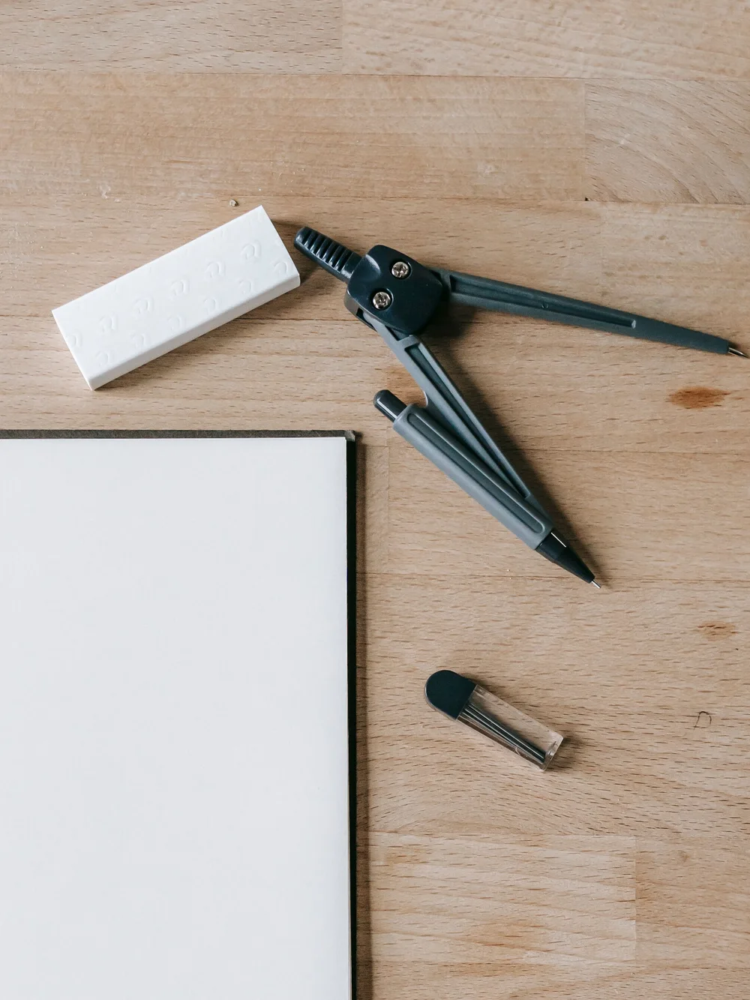
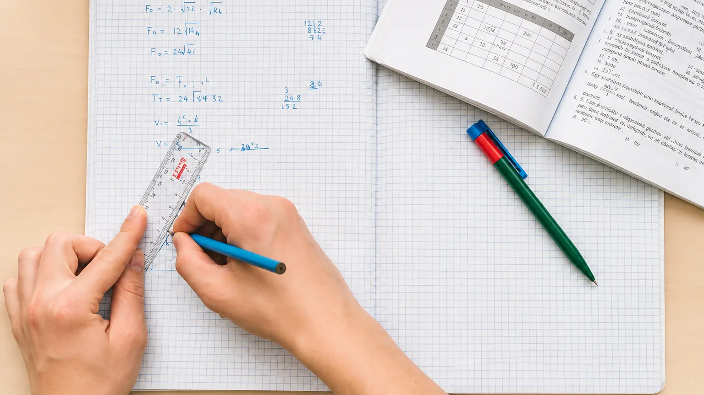

Индивидуально, онлайн · 5–11 классы
Обучение математике без пробелов в знаниях — с понятным планом обучения
Помощь в освоении школьной программы, подготовка к контрольным работам, ОГЭ и ЕГЭ. Индивидуальные занятия онлайн с учётом уровня подготовки ученика.
Направления обучения
5–8 классы
Школьная математика
Объяснение сложных тем, устранение пробелов в знаниях, подготовка к контрольным работам.
9 класс
Подготовка к ОГЭ
Повторение программы, разбор экзаменационных заданий, тренировка решения типовых задач.
10–11 классы
Алгебра и геометрия
Углублённое изучение тем, развитие математического мышления, помощь со сложными задачами.
11 класс
Подготовка к ЕГЭ
Систематизация знаний, решение экзаменационных заданий, индивидуальная подготовка.

Пример плана обучения на 8 недель
- Неделя 1Уровень знаний
- Недели 2–3Повторение
- Недели 4–5Новые темы
- Недели 6–7Закрепление
- Неделя 8Итоги
Программа и продолжительность обучения адаптируются к уровню знаний и целям ученика.
У каждого ученика — свой путь к пониманию математики
Записаться на пробное занятие
Индивидуальный подход
Определяем уровень знаний и составляем программу с учётом целей ученика.
Понятные объяснения
Разбираем сложные темы последовательно, от простого к сложному.
Практика на каждом занятии
Закрепляем материал решением задач и самостоятельными упражнениями.
Контроль прогресса
Регулярно проверяем усвоение материала и при необходимости корректируем программу.
Стоимость занятий
Продолжительность и стоимость занятий обсуждаются индивидуально с учётом целей ученика, уровня подготовки и выбранной программы обучения.
От чего зависят условия
Цели ученика
Повышение успеваемости, подготовка к ОГЭ или ЕГЭ, устранение пробелов в знаниях.
Уровень подготовки
Определяется в начале занятий, вместе с пробелами в знаниях.
Программа обучения
Адаптируется к уровню знаний и целям ученика.
Начните с пробного занятия
Расскажите, в каком классе учится ребёнок и какие задачи нужно решить. Подберём подходящий план обучения.